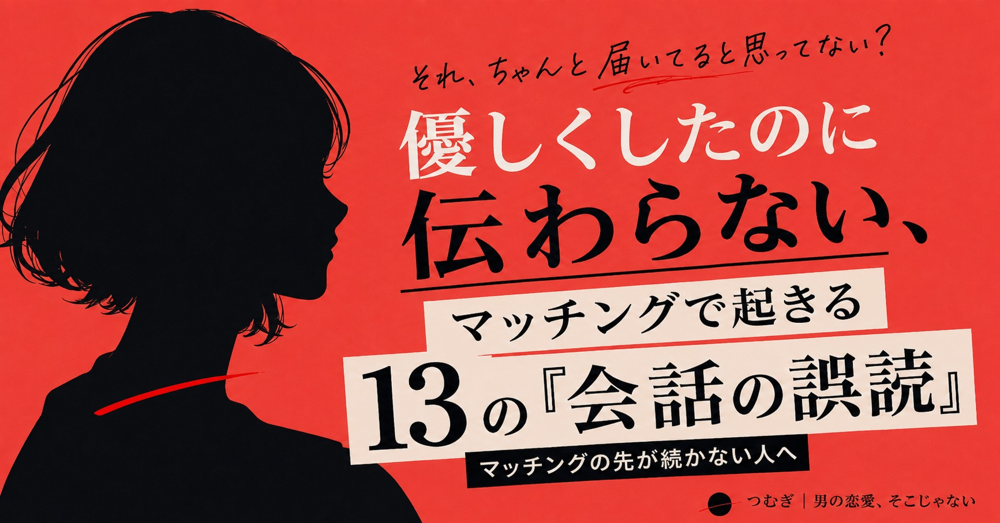
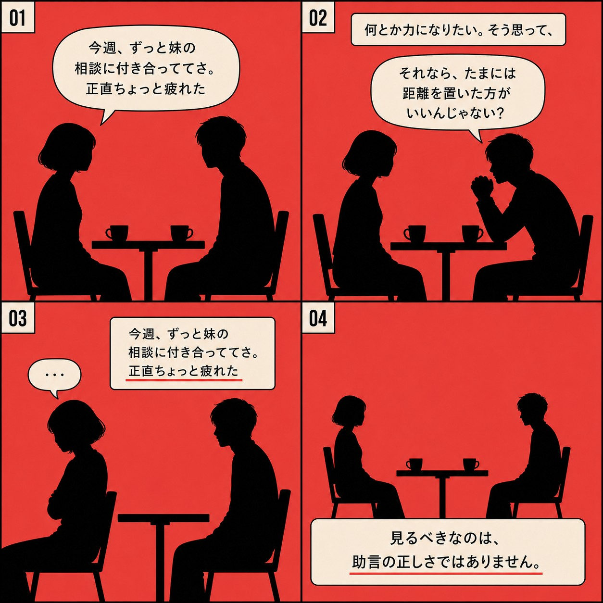
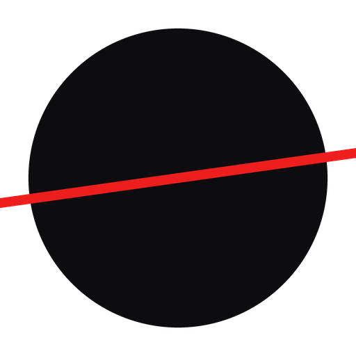

優しくしたのに、
伝わらない。
マッチングの先が続かない男性へ。心理学の研究をもとに、会話のどこで善意がズレたのかを13の場面で分解します。
先着3名 7,980円で有料noteを読むこんな覚えは、ありませんか。
- 優しくしたつもりだったのに、反応が薄くなった
- 話は聞いたのに、なぜか会話が続かなかった
- 相手の好きなタイプに、自分を合わせようとしている
- 返信の速さや長さで、脈あり・脈なしを判断してしまう
- 深い質問を重ねれば距離が縮まると思っている
- 恋愛の情報はいろいろ読んだのに、実際の会話では使えない
どれも、性格が悪いからではありません。
悪気なく、むしろ相手のためを思って選んだ言葉です。
「脈ありサイン」を集めるほど、目の前の話は聞けなくなる。
見ているのは、実際に交わされた言葉と、その後の反応です。
善意が、会話のどこで別の意味として届いたのか。そこだけを見ます。
性格を変える必要はありません。
見る場所を変えます。
13の会話と、次に変える一言まで。全13章+特典3点。
くわしい中身を見るたとえば、こんな場面があります。

彼女「最近、仕事がしんどくて。上司ともあまり合わないんだよね」
何とか力になりたい。そう思って、
「それなら転職も考えた方がいいんじゃない？」と返す。
間違ったことは言っていません。相手の将来を考えた、真面目な助言です。
それでも、その後の反応が薄くなることがあります。
相手がその瞬間に求めていたのが「答え」ではなく、
「自分が何に苦しんでいるのかを分かってもらうこと」だった場合、助言は少し早く届きます。
「上司のどんなところが一番しんどい？」
女性に好かれる魔法のセリフではありません。
相手の話を、相手の話のまま続けるための一例です。
会話を、4つの軸で読み直す。
このnoteで扱う13の場面は、すべて同じ場所を見ています。
相手が話したことに、こちらがどう応答したか。それだけです。
理解
相手が話した内容を、意味を変えずに受け取れたか
受容
否定・訂正・評価を急がずに受け止められたか
気遣い
相手が重要だと感じている部分に反応できたか
相互性
片方だけが質問・自己開示を続けていないか
四つの軸は、順番に満たすものではありません。
大切なのは、自分がどの軸を飛ばしがちかを知ることです。
全13章+特典3点
- 1「好きなタイプ」に自分を合わせても、答えにはならない
条件に応えようとする前に、見る場所があります
- 2悩みを話されたとき、助言が少し早い
助言の中身ではなく、順番の話です
- 3「俺も同じ」で、相手の話を終わらせていないか
共感のつもりが、話の主役を入れ替えることがあります
- 4深い質問をすれば距離が縮まる、は半分だけ正しい
効いていたのは質問の深さではありませんでした
- 5返信を、すぐ「脈あり・なし」に変換しない
観察できる事実と、自分が加えた解釈を分けます
- 6会話を4軸で読み直す
理解・受容・気遣い・相互性
- 7質問しても、質問が返ってこない
返すのは質問ではなく、自分の話を一つです
- 8相性は良かったはずなのに、2回目が来ない
見るのは診断結果ではなく、会話の中の一往復です
- 9マッチ後、最初の一週間で会話が減っていく
変えるのは連絡の頻度ではなく、一通の返し方です
- 10相談されて、何も返せず固まった
正解のセリフではなく、受け止めたことを示す一言です
- 11対面では良かったのに、テキストに続かない
見るのは絵文字の数ではなく、拾った言葉です
- 1230の想定会話を、一行だけ直す
ここまでの考え方を実践形式で確認します
- 13会話レビューシート
自分がどの軸を飛ばしやすいかを見つけるシート
会話レビューシート
第13章のシートをそのまま、繰り返し使えます
AI整理用・安全設計プロンプト
好意の判定・性格診断・成功確率の算出はさせない設計です
研究出典一覧
本文が示したこと・示していないことを、論文単位で整理
積み上げたもの。
心理学の研究7本を根拠にしています。
| 研究 | このnoteで示したこと |
|---|---|
| Eastwick & Finkel（2008） | 事前に述べた理想の条件は、当日の実際の魅力評価を予測しなかった |
| Eastwick, Luchies, Finkel & Hunt（2014） | 理想条件は、対面交流の後は予測力を失う傾向 |
| Finkel, Eastwick, Karney, Reis & Sprecher（2012） | マッチングのアルゴリズムが優れた結果をもたらす証拠は乏しい |
| Reis & Shaver（1988） | 親密性は自己開示と、相手の応答性の知覚から成る |
| Feeney（2004） | 励ましは良い結果と、介入的な助言は自己評価の低下と結びつく傾向 |
| Notarius & Markman（1993） | 応答的な傾聴は、理解が伝わる形で返ることを含む |
| Aron, Melinat, Aron, Vallone & Bator（1997） | 段階的な自己開示は、雑談より親密感を高めた |
研究が示していないこと（総括）：特定の相手の好意の有無・確率／相手の性格の診断／送れば成功する正解の文面／研究どおりに行動すれば得られる結果の保証。
このnoteも、これらは扱いません。

Editorつむぎについて
私は、どこにでもある会話のずれ、相手が感じる違和感、一つ一つを見ています。
男性が良かれと思って選んだ言葉を否定せず、実際のやり取りのどこで意味がズレたのかを、研究資料と照らして分解します。
脈ありの確率も、性格診断も出しません。記録から分からないことは、分からないと書きます。
直すのは、あなた自身ではありません。次の会話で変える一言です。
次に、何を一つ変えるか。ここまで来たら、あと少しです。
価格と中身を確認する優しくしたのに伝わらない
13の「会話の誤読」と、次に変える一言
- 全13章（想定会話10本+4軸の読み直し方+30の一行修正リスト）
- 特典1 会話レビューシート（汎用版／メッセージ用／初回デート後用）
- 特典2 AI整理用・安全設計プロンプト＋専用ツール
- 特典3 研究出典一覧
7,980円（先着3名・税込）
先着3名までの価格です。4人目以降は9,800円に切り替わります。それ以降の値上げは、実際に内容を増補したときに限ります。
先着3名 7,980円で有料noteを読むお支払い・記事の閲覧は note 上で行われます。
気になることに、先に答えておきます
読めば必ず距離が縮まりますか。
保証はできません。会話の受け取られ方は相手や状況によって変わります。このnoteが渡すのは正解のセリフではなく、次に一つだけ確かめる場所です。
女性の本音や好意の確率が分かるようになりますか。
いいえ。好意の判定や性格診断はこのnoteの対象外です。扱うのは、会話の中で実際に何が起きたかだけです。
研究の話が中心で、難しくないですか。
研究名を主役にはしていません。各章とも、具体的な会話を先に見せ、研究は最後に一行だけ添えています。
特典のAI整理用プロンプトは何に使いますか。
自分の会話をAIに整理してもらう時に使う、安全設計つきのプロンプトです。好意の判定や性格診断をAIにさせない指示があらかじめ入っています。個人情報は入力しない前提でご利用ください。
専用ツールとは何ですか。
会話を貼るだけで、事実と解釈を分け、四軸で整理する対話形式のツールです。購入者にリンクをお渡しします。ChatGPTのアカウントが必要です。
返金はできますか。
デジタルコンテンツの性質上、購入後の返金は原則行っていません。お支払いは note 上で行われるため、note のご利用規約にも準じます。
今後、値上げしますか。
先着3名までは7,980円、4人目以降は9,800円です。それ以降さらに値上げする場合は、内容を実際に増補したときに限ります。
もう少し様子を見たい方は、同じ4軸の考え方を1つの会話で紹介した無料noteもあります。プロフィールから読めます。
LINEでは、会話の見方を1つずつ不定期で配信しています。友だち追加はこちら。